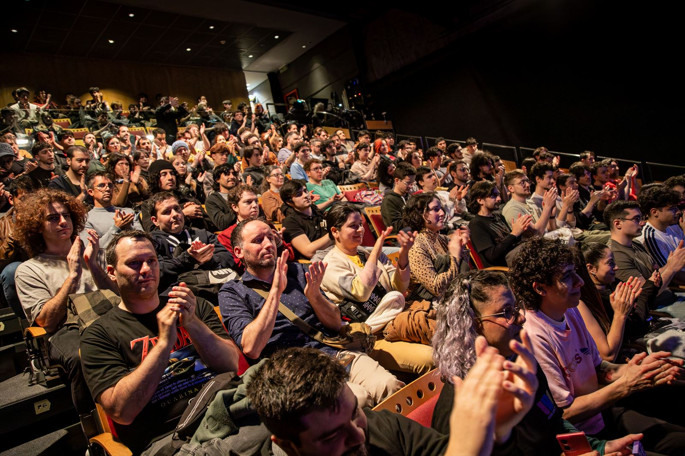
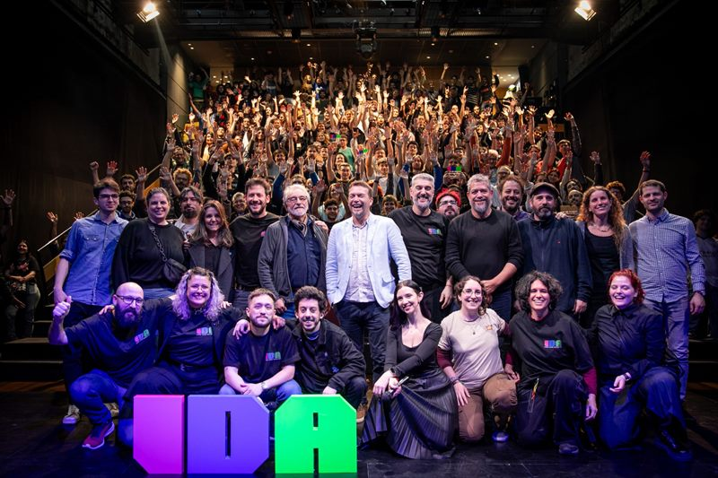
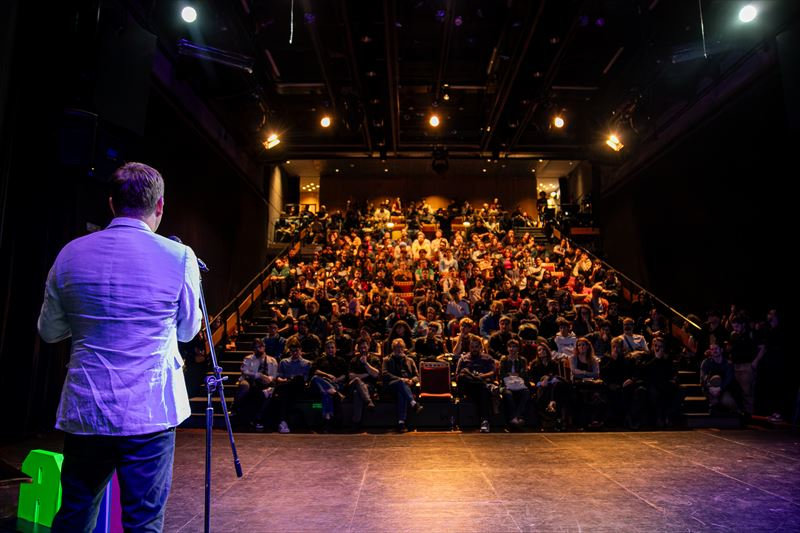
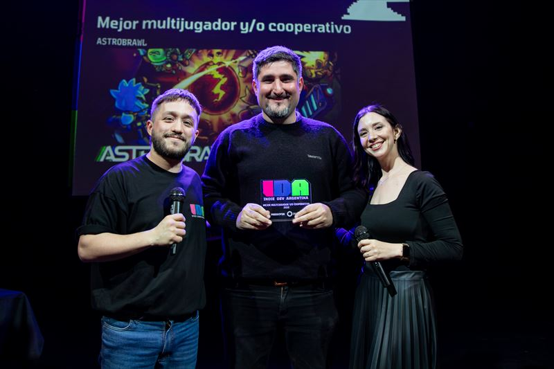

Descubrir la escena
Conocé de primera mano los videojuegos indie que se hacen en Argentina y hacia dónde va la industria local.

¡Gracias por hacer IDA !
Nos vemos en IDA .

Si estás haciendo tu primer videojuego, sos estudiante o simplemente amás la industria independiente, IDA es tu lugar en el mundo.
Indie Dev Argentina es un evento boutique de videojuegos creado por Press Over que, mediante la exposición de títulos en desarrollo, charlas especializadas y premios, fomenta los nuevos talentos de la escena local. Y todo con entrada libre y gratuita.
Encontrá tu lugarMostrá tu videojuego, dá una charla, sumate al equipo o poné tu marca frente a la comunidad. Hay una forma de hacer IDA pensada para vos.
Conectá tu marca con la comunidad indie más grande de Argentina: desarrolladores, estudiantes, estudios y miles de jugadores en un mismo lugar.
Ver la propuesta para sponsorsCinco razones para no faltar en
Conocé de primera mano los videojuegos indie que se hacen en Argentina y hacia dónde va la industria local.
Charlas y talleres de referentes nacionales e internacionales.
Devs, especialistas y cientos de jugadores probando tu proyecto en vivo.
Contactos que se convierten en equipos, colaboraciones y oportunidades.
Con un proyecto más pulido y la comunidad de tu lado.
Videojuegos en desarrollo para probar en cada piso.
Equipos de todo el país muestran sus proyectos, los dejan jugar y escuchan al público. La selección prioriza primeras obras y equipos nuevos.

Experiencias reales de desarrollo, en simultáneo.
Postmortems, procesos, herramientas, arte, audio y negocio, para quienes recién arrancan y para devs con años en la industria.

Lo mejor del showcase, desde 2025.
En cada edición premiamos a los videojuegos del showcase en distintas categorías, de audio y narrativa al mejor videojuego.
Nada: IDA es de entrada libre y gratuita.
Con la convocatoria que abrimos antes de cada edición. En la última pedimos una demo jugable, que el equipo traiga su propia notebook y que al menos dos integrantes estén presentes toda la jornada.
¡Sí! Suscribite al newsletter y te avisamos cuando abra la convocatoria de charlas.
Para eso existe IDA: es un primer acercamiento al desarrollo indie, con charlas para quienes recién arrancan, devs con experiencia y público general.